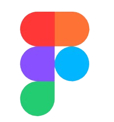
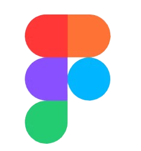

CotiLink es una aplicación web diseñada para que los administradores de negocios puedan dar seguimiento a sus cotizaciones. Ofrece una interfaz clara y funcional para registrar,
visualizar y actualizar el estado de cada cotización, facilitando así la gestión comercial y la comunicación con los clientes.
üéØ
Objetivo y Motivación
Este proyecto nació a partir de una
necesidad concreta:
muchos
administradores de negocios o personas del área de ventas
pierden oportunidades de venta por no tener una herramienta clara que
les permita organizar y hacer seguimiento de sus cotizaciones.
Cotilink resuelve este problema al centralizar todo en una sola plataforma accesible y fácil de usar.
üîÑ
Flujo de Desarrollo
Planeamiento y diseño
Inicialmente,
investigue sobre herramientas actuales, entreviste a proveedores con los que había trabajado y consulté por las herramientas
actuales que usan para hacerle seguimiento a sus cotizaciones. La mayoría indicó que no tenía un sistema de seguimiento, otros indicaron que
tenían un sistema que era muy caro y que al ser independientes no podian pagarlo mensualmente y otros proveedores indicaron que encontraron
herramientas, pero eran complicadas de usar.
Luego definí mi
hipótesis de valor y de crecimiento para mi idea siguiendo los conceptos del
método Lean Startup.
Después, definí el
MVP (Minimum Viable Product) con requisitos mínimos funcionales como el sistema de autenticación, la creación y eliminación de
cotizaciones, el campo para buscar cotizaciones y el envío automático de correos electrónicos.
Finalmente, escogí las
herramientas y el framework a usar para desplegar la página web.
üîÑ
Flujo de Desarrollo
Planeamiento y diseño
Definí las
secciones principales: login, página de registro, tabla de cotizaciones principal, página de cancelación,
página de creación de cotizaciones y página de modificación de cotizaciones.
Utilicé
FIGMA para crear los layouts y el flujo de la página.
Desarrollo del Backend
En este punto
inicie el desarrollo de la aplicación, es decir, escribir código.
Primero definí la estructura de las carpetas según las aplicaciones definidas. El framework escogido para el desarrollo web fue
Django. Para el sistema de autenticación se utilizó
"django-allauth" especialmente para manejar el login
con
"google".
Luego
modelé la estructura de la base de datos en el que definí los campos, los tipos de datos aceptados y las relaciones
entre tablas.
A partir de las tablas de la base de datos
generé las plantillas de los forms, la lógica de los forms para crear, leer, actualizar y
eliminar datos en la base de datos.
Utilicé los
default views como "ListView", "CreateView", "UpdateView" y "DeleteView" que luego personalice según la lógica
de mi aplicación.
Desarrollo del Frontend
Organicé y desarrolle los
templates de html, junto con los archivos de
estilo css.
Dentro de los templates maneje
variables de contexto para mostrar los datos de las bases de datos, según el usuario.
Además, dentro dentro de los templates utilicé
template tags para cargar los archivos estáticos y extener plantillas base.
Deployment de la aplicación
Para el deploy de la aplicación utilicé
Railway. Publiqué mi código base en mi repositorio de
GitHub.
Luego en Railway generé una base de datos "PostgreSQL" y conecte la base de datos con mi repositorio de Github. Finalmente, configure mis
variables de entorno para
utilizarse en producción, como la contraseña del email host, del acceso a la base de datos, etc.


 
